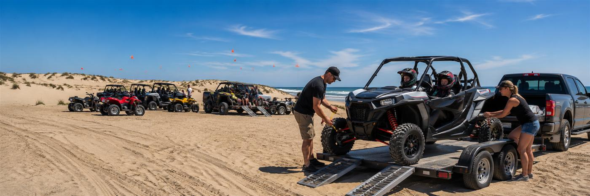
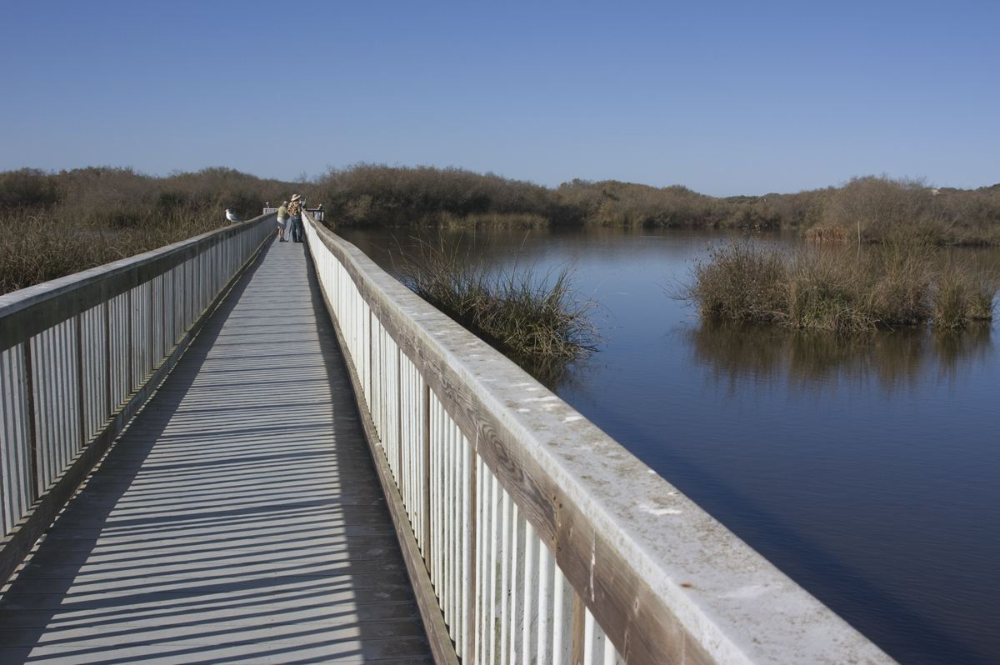
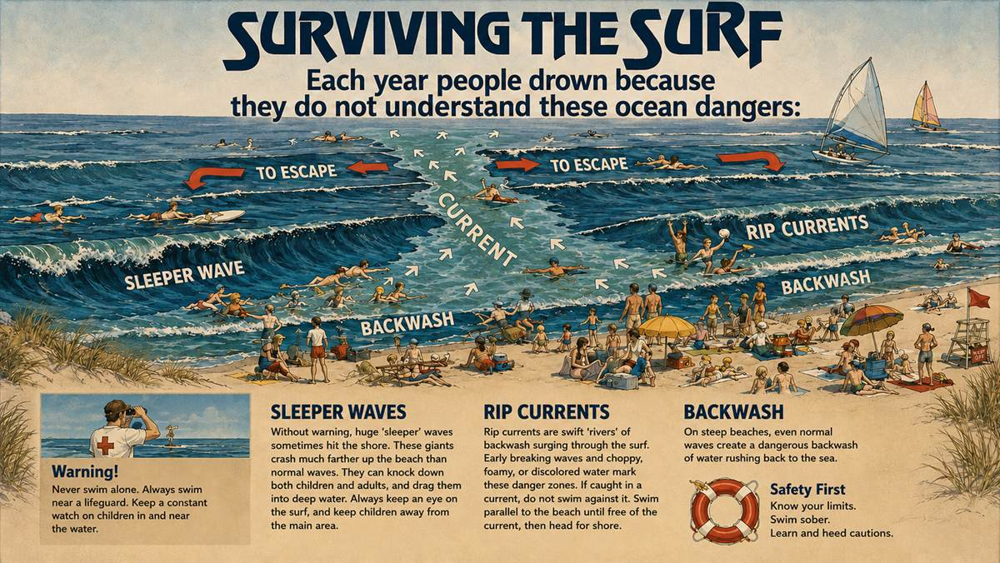
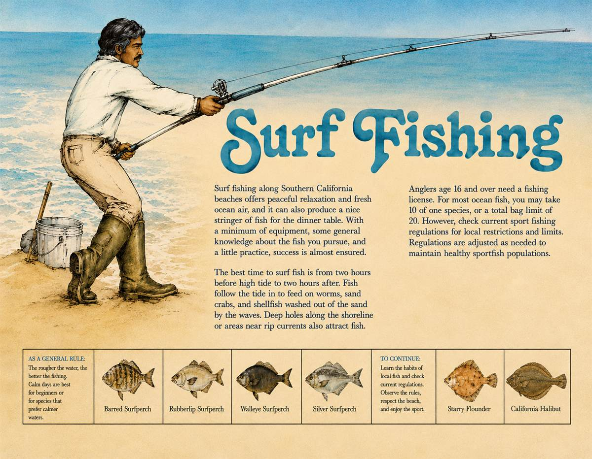

A Day at the Dunes
You don't have to camp to experience the only California State Park where you can drive on the beach. Here's what a day visit looks like.
 Getting In
Getting In
Entrances & Fees
Enter the beach at Grand Avenue (Grover Beach) or Pier Avenue (Oceano). A day use fee is charged per vehicle at the kiosk.
- Day use fee: $5 per vehicle, sold first come first served at the Grand Avenue and Pier Avenue kiosks.
- Hours: vehicle day use runs 7 AM to 10 PM daily.
- Dogs: leashed dogs are welcome on the beach. They are prohibited at Oso Flaco Lake and the Pismo State Beach Dune Preserve.
- Restrooms and cold showers are available at both park entrances.
- Accessibility: sand wheelchairs are available first come, first served at all entrance stations, with ADA restrooms at both entrances. Details at access.parks.ca.gov or (805) 773-7170.
- Parks passes accepted: Golden Bear, Senior Golden Bear, Golden Poppy, Explorer, OHV, Disabled Discount, Distinguished Veteran, and State Library passes all work here.
- Horses welcome: an equestrian staging area sits near the Grand Avenue beach entrance.
- RV dump station: fee-based station on Le Sage Drive, about 0.1 mile north of Grand Avenue.
- Passenger cars are fine up north. The northern portion of the beach is easy driving for ordinary cars on firm sand.
- 4WD for the south end. Four-wheel drive is recommended for reaching the camping and OHV areas.
- Beach wheelchairs are available for loan at both the Pier Avenue and Grand Avenue entrances.
- Speed limit: 15 MPH on the beach and within 50 feet of any camp or group of people. Sand Highway follows Highway 1 rules up to Pole 11.
 The OHV Area
The OHV Area
Post 2 Entrance
Post 2 is one mile south on the beach from Pier Avenue and marks the beginning of the OHV area.
- Transport OHVs to Post 2 before off-loading; riding starts beyond that point.
- Respect the fences. Fenced and signed areas are closed either because the property beyond is private or because it holds sensitive plant and animal life.
- Check the creek. Arroyo Grande Creek sits between Pier Avenue and Post 2; check its status before heading south.

Oso Flaco Lake
At the southern end of the park, Oso Flaco Lake is a non-motorized day-use area with parking, restrooms, and a one-mile ADA-accessible boardwalk that crosses the lake and leads all the way to the beach. It is one of the best birdwatching spots on the Central Coast: the lake is a key stopover for waterfowl traveling the Pacific Flyway. No vehicles, no dogs, just trails, water, and wings.
Surf Smarts & Fishing the Tide

Surviving the Surf
This coast earns its warning sign. Three dangers put people in the water every year:
Sleeper waves. Huge waves that arrive without warning and crash far higher up the beach than normal. Never turn your back on the ocean, and keep kids away from the water's edge.
Rip currents. Swift rivers of backwash surging out through the surf. Caught in one? Don't fight it: swim parallel to shore until you're free, then angle back in.
Backwash. On steep beach days, even normal waves rush back toward the sea hard enough to pull you off your feet.

Surf Fishing
A rod, a bucket, and a little tide knowledge is all it takes out here.
Fish the tide, not the clock. The bite runs from two hours before high tide to two hours after, when fish follow the water in to feed on sand crabs and worms washed out of the sand.
Read the beach. Deep holes along the shoreline and the edges of rip currents hold fish.
License up. Anglers 16 and over need a California fishing license. Typical limits: 10 of one species, 20 fish total. Confirm current Central Coast bag limits before you keep anything.
What you'll catch: barred and walleye surfperch, starry flounder, even California halibut.

Rent Your Ride at the Dunes
Four official park concessionaires rent quads, buggies, and side-by-sides right at the entrances — helmets, flags, and a quick lesson included. Show up empty-handed, leave with sand in your teeth.
- Arnie's ATV Rentals · (805) 474-6060 · pismoatvrentals.com
- BJ's ATV Rentals · (805) 481-5411 · bjsatvrentals.com
- Steve's ATV Rentals · (805) 481-2597 · stevesatvrentals.com
- Sun Buggie Fun Rentals · (805) 473-8636 · sunbuggy.com
Build Your Trip Plan in 60 Seconds
Tide-timed arrival windows for your exact dates, a personalized gear checklist, and the local tricks that keep you off the tow strap.
Plan Your Trip